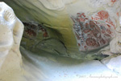
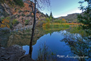
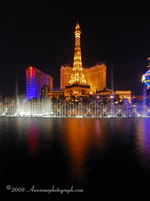
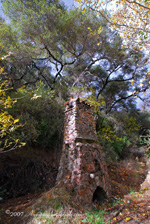
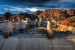
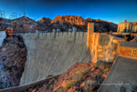
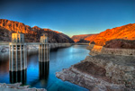
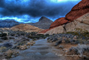
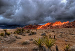
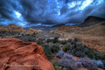
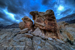
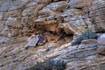
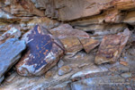
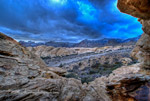
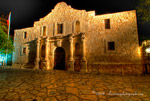
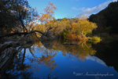
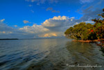
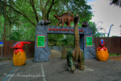
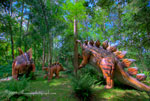
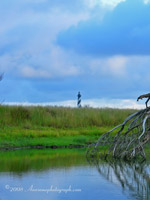
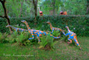
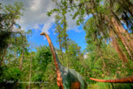
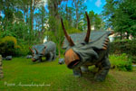
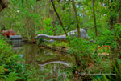
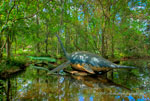
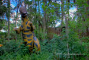
All Artwork, images, content, expressions, logos, sayings and design are copyright . ©Copyright 2007-2026 Awesome Adventures in Photography and Video awesomephotograph.com & ©Jerry Stevens Jr. All rights reserved.